BY ISA
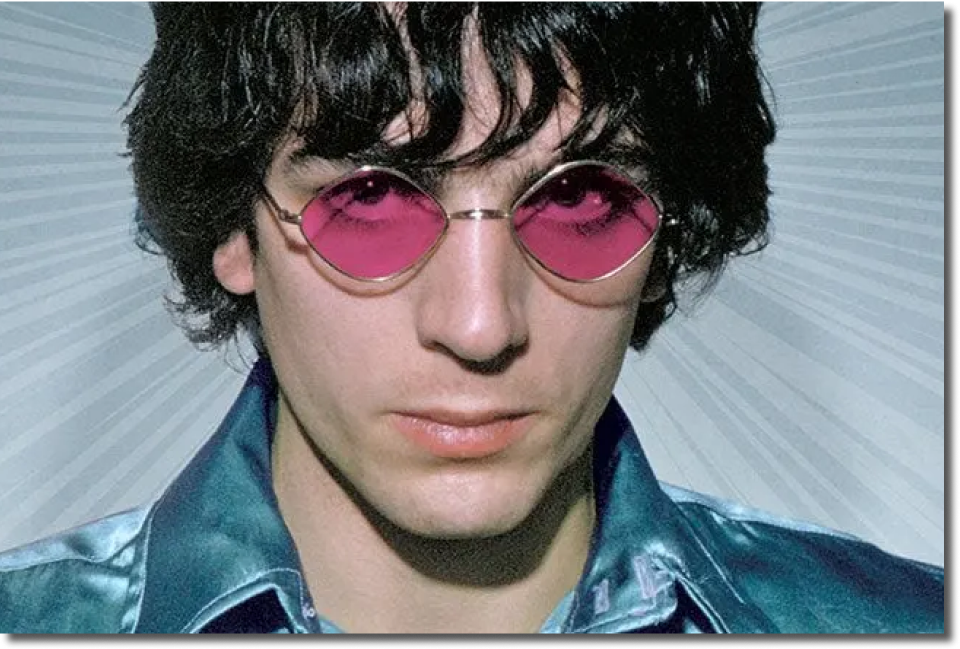
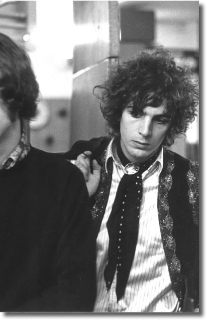
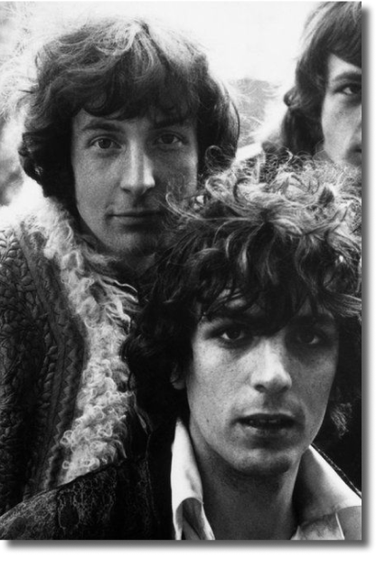
A glimpse into England’s finest voice.
AS THE SPARK that launched Pink Floyd into orbit, Syd Barrett
left behind a small but unbelievably potent body of work. He was
the principal songwriter behind the band’s debut – 1967
masterpiece The Piper at the Gates of Dawn – and a handful of
strong early singles that helped define the psychedelic age. His
creative genius was derailed by a drug-fueled psychological
collapse, forcing his 1968 removal from the group he helped
form. Though Barrett helmed Pink Floyd for barely two years out
of their three-decade career, his specter haunted the band for
the remainder of their existence and his presence is felt in
some of their finest work.
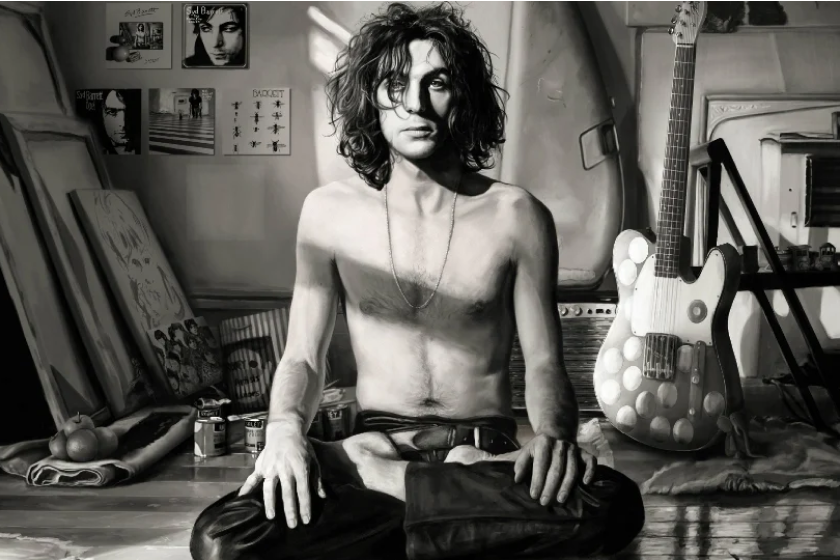
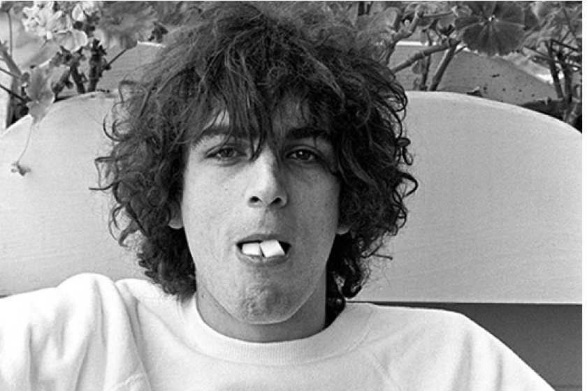
 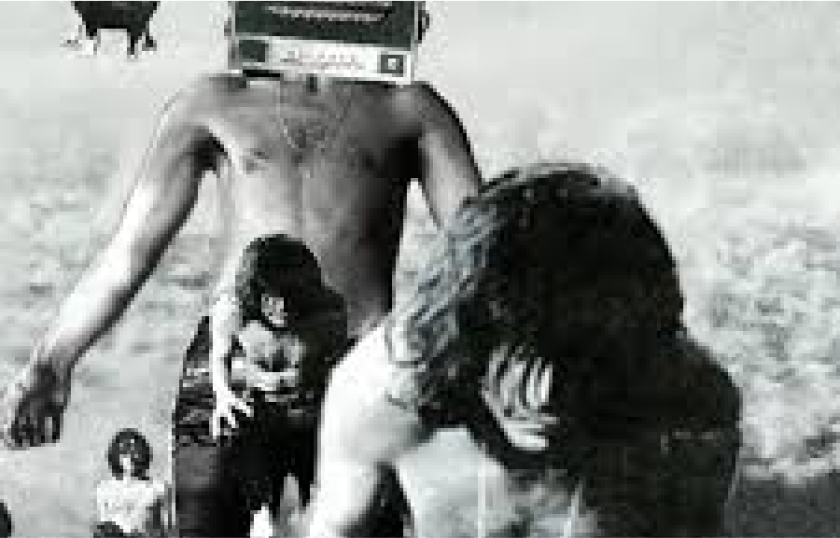
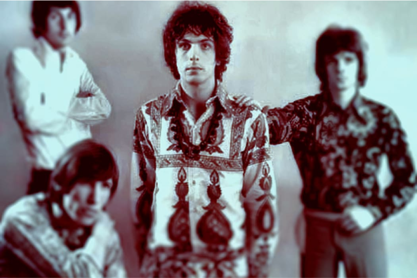
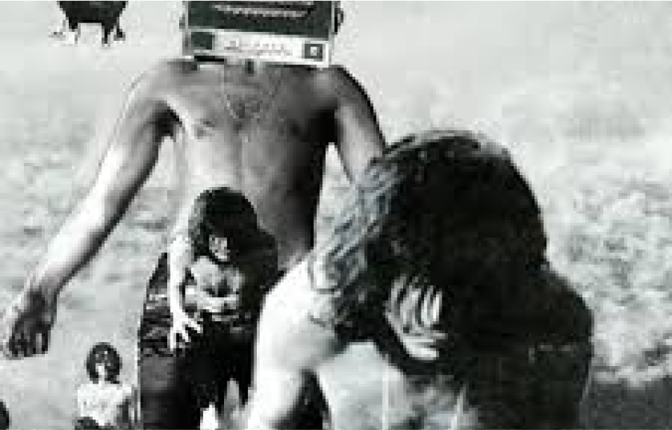
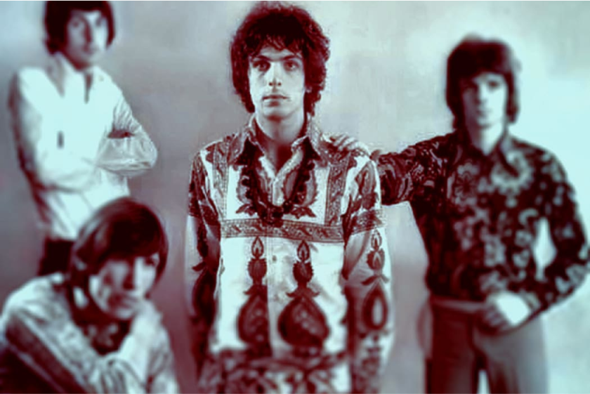
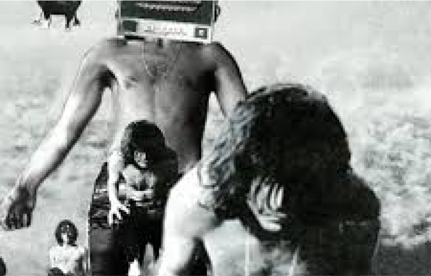
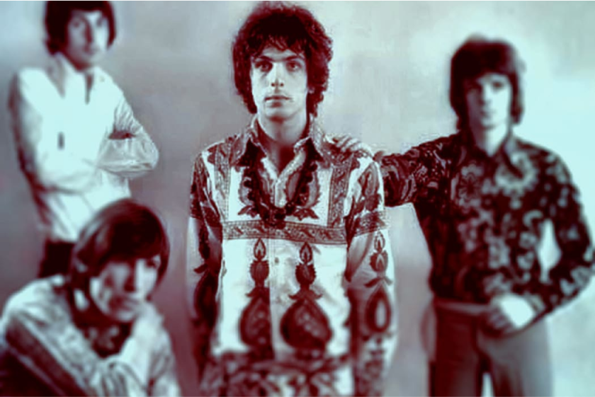
More About
The Madcap Itself

Get Alerts to Upcoming News and Content
Sign up with your email address to receive news and updates.
Enter a valid email address